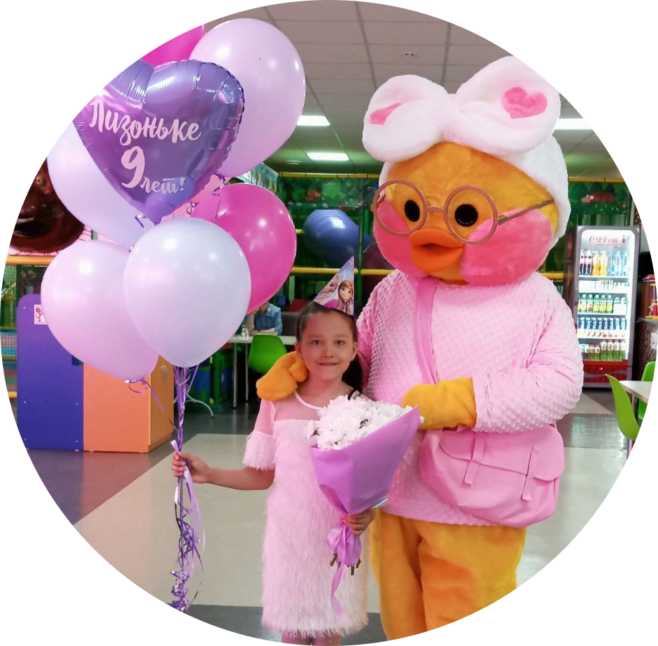
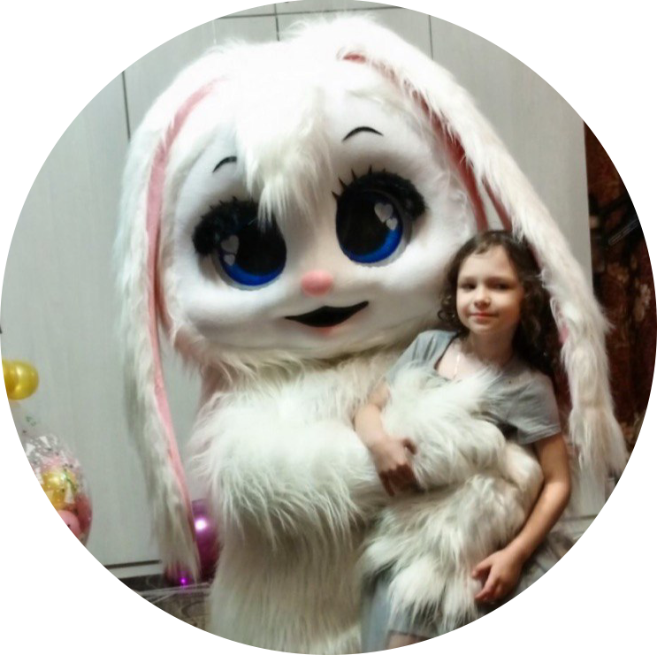
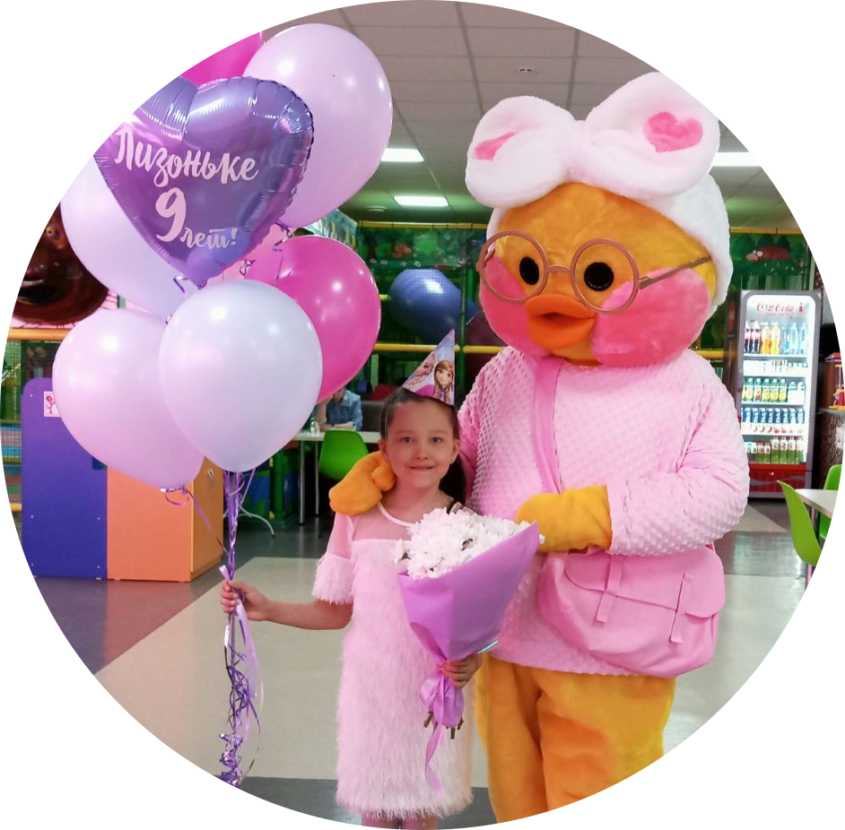
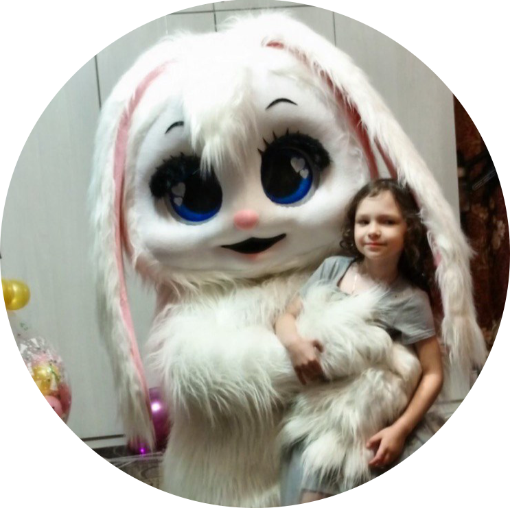
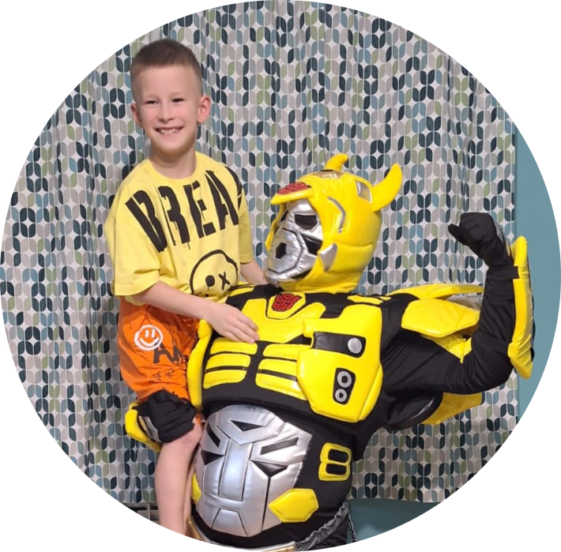
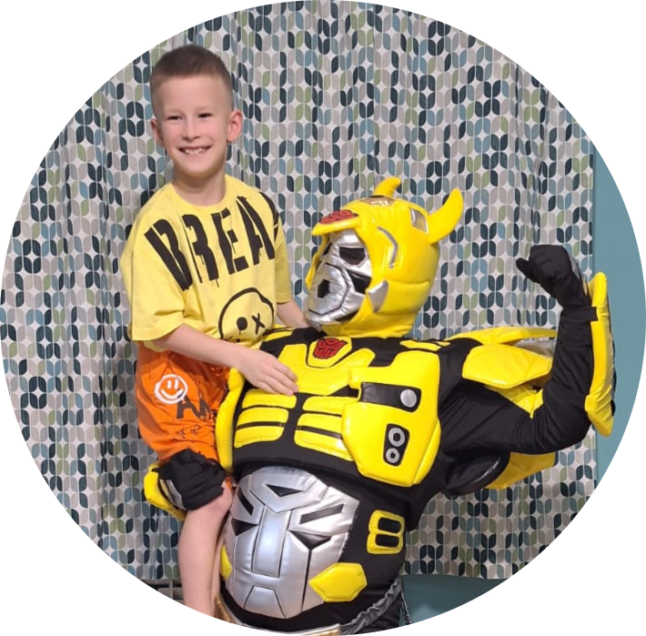

 

Хочется рассказать, как все начиналось.
Здравствуйте, друзья! Меня зовут Ирина и я организую поздравления с ростовыми куклами.
Несмотря на то, что страничку в соцсети мы сделали совсем недавно, мой путь в мире праздников начался еще в 2018 году.
Раньше я работала воспитателем в детском саду и огромное количество времени проводила с детьми. Конечно же, в любом садике хочется организовать классный праздник для деток.
Вот так и родилась идея с ростовыми куклами! Я думаю, можно не убеждать вас, что дети были просто в восторге от такого мероприятия.
Любому ребенку захочется встретиться с любимым персонажем или сказочным героем, а еще потанцевать и поиграть с ним.
С тех пор мы решили, что хотим приносить еще больше счастья и стали приходить на праздники, будь то юбилей бабушки, день рождения ребенка или школьное мероприятие.
Ждите фотографии и видео, мы уже "начали подготовку счасливых лиц" наших именинников.
P.S. Буду бесконечно благодарна вашей поддержке!